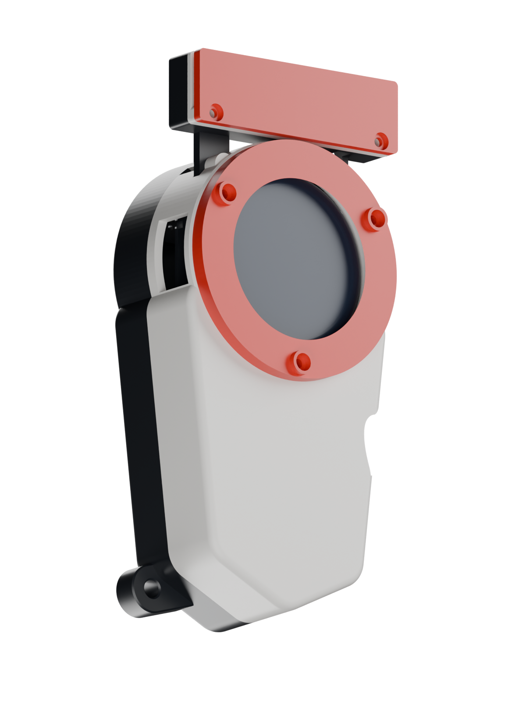

HARDWARE FOOTAGE / DEVICE RECORDING 1
SMALL DEVICE. BIG ADVENTURE.
A partner.
A pocket
world.
Choose an egg. Raise a partner.
Take the next encounter with you.
A working build, told through its screens and parts.

Touch-only enclosureACTUAL CAD
REVIEW RENDER
01 A companion you raise02 Encounters on the move03 A build you can open
01 / THE GAME
A little world.
Plenty to do.
A guided look at the showcased firmware, rendered from its own UI. Every screen below is a simulator sample.
SIMULATORNATIVE UI · 412 × 412
BEGIN THE JOURNEY
Every partner
starts somewhere.
Browse the egg choices and meet the partner that begins your adventure.
Re-rendered from recorded baseline f74ee4c. Demo states are prepared for review. These are host renders, not photographs of the display.
Watch the simulator replaysSEEDED STATES · NOT HARDWARE FOOTAGE
Battle, frame by frame.
A native Tactical battle replay from a seeded state. It shows the core-resolved exchange, rendered on the host. It does not measure live device frame timing.
02 / IN HAND
The real thing,
in motion.
Touch navigation, care, an Auto battle and a new companion — captured on the actual device in the two supplied videos.
HARDWARE FOOTAGE
Real device. Original speed. Short, silent screen close-ups.
Framed around the device display; incidental surroundings are masked.
HARDWARE FOOTAGE / DEVICE RECORDING 2
Battle. A new friend.
Hagurumon faces Tentomon in Auto mode. The capture playback ends with “NEW FRIEND!” and “PARTNER SAVED” on the device.
Original 00:00.0–00:28.8 · cropped hardware footage
The filmed capture is automatic. Manual flick capture is shown in the simulator above. A Nearby discovery screen appears in the source footage; no two-device radio exchange or walking trial is demonstrated.
Open the hardware contact sheet ↗03 / INSIDE THE BUILD
Every piece
has a place.
An exploded view of the current C14-P19 touch-only enclosure. The geometry comes from the actual exported parts.
ACTUAL CAD · C14-P19
EXPLODED VIEW / PARTS SEPARATED FOR CLARITYBLACK · WHITE · RED
01 / ENCLOSURE
A shell with character.
White front, black rear, red accents. Current touch-only geometry, including the C14-P19 receiving pilots.
02 / ELECTRONICS
The core of the build.
Waveshare 1.46-inch display/board reference, battery envelope and the relevant supports. Electronics are design references, not scans of installed parts.
03 / ASSEMBLY
Designed to come together.
Mounts come from the current geometry. Nominal fastener profiles, the 17-screw schedule and optional NFC pieces have their own detail view.
Exploded spacing is illustrative. The battery is a 36 × 67 × 10 mm design envelope. Optional modules are not evidence of installed hardware.
Open the annotated parts view ↗Mounts, fasteners & optional NFC ↗SHOWCASE EDITION / 09 OCT 2026
A clear view of
where the build is.
Hardware footageFour continuous screen close-ups from two originals. Anonymous fingertips remain where they overlap the touch display. Surroundings and audio are excluded. The footage itself does not identify its firmware commit.
SimulatorNative UI from firmware f74ee4c, with prepared sample states. Nearby screens simulate discovery and exchange; they do not verify a radio connection.
EnclosureC14-P19 touch-only parts, with electronics reference geometry and optional items distinguished.
View asset provenance ↗Independent fan project. Digimon names and artwork belong to their respective owners; this project is not affiliated with or endorsed by them. The showcase presents recorded gameplay and rendered screens. No third-party sprite or scenery packs are offered for download. Sources and notices ↗